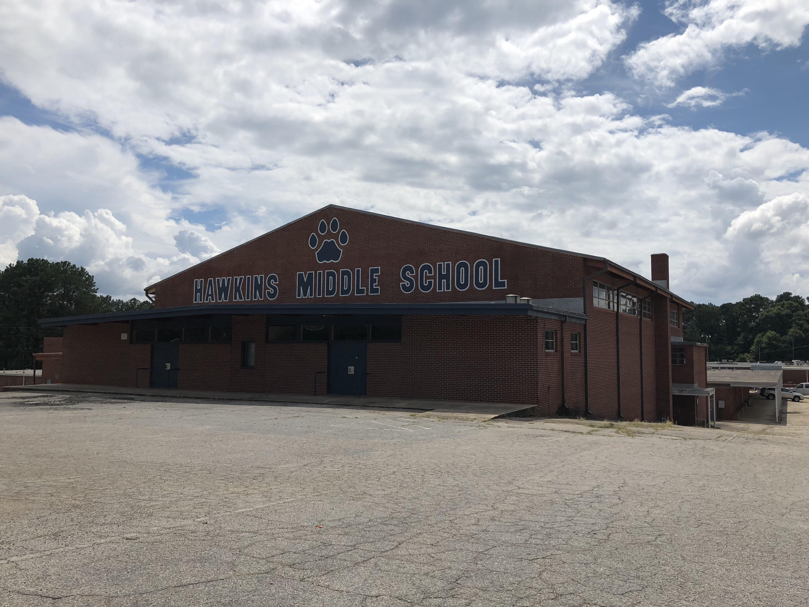
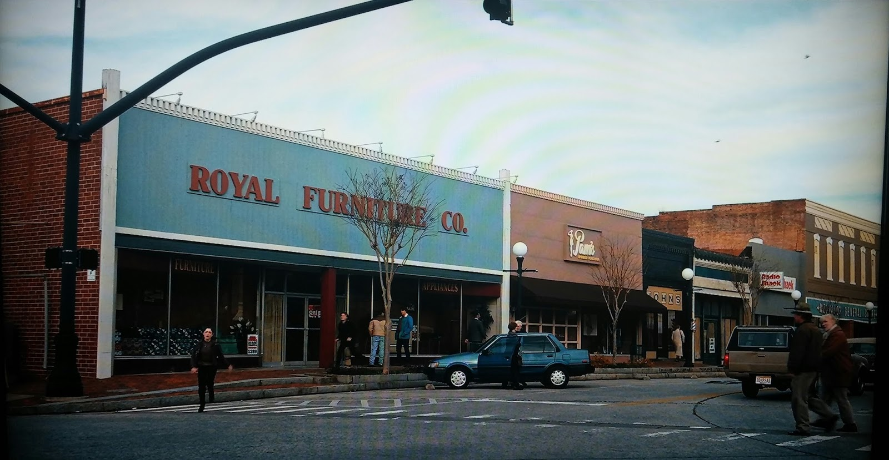

Хоукинс — маленький город в штате Индиана, в котором происходят события сериала «Очень странные дела».
 До 1983 года Хоукинс был в основном спокойным городом с тихой, размеренной жизнью. Последнее сообщение о пропавшем без вести человека поступало летом 1923, а последнее самоубийство произощло осенью 6 ноября 1961. Наибольший интерес в округе представляла секретная Национальная лаборатория Хоукинса, одна из нескольких национальных лабораторий, выросших после Второй мировой войны.
В ноябре 1983 года во время экспериментов в лаборатории случайно были открыты Врата в другое измерения, позволившие хищному существу из альтернативной реальности проникнуть в город. Монстр похищал жителей и забирал их собой в Изнанку. Среди его жертв были Уилл Байерс, которого удалось вернуть домой лишь спустя неделю, и Барбара Холланд, которую не удалось спасти. Обстоятельства их исчезновения были закрыты агентами лаборатории.
Сказать, что Хоукинс — странное место, значит не сказать ничего. В этом городе расположено несколько порталов, которые ведут в причудливое альтернативное измерение. Люди назвали его Изнанкой. В этом странном мире живут ужасные монстры, которые имеют обыкновение заходить через порталы в Хоукинс, похищать и убивать его жителей. Скажем так, Хоукинс — это не типичный американский городок, в котором царит слегка сонная и ленивая атмосфера. Он совсем не такой, каким может показаться на первый взгляд. Хоукинс — это определенно не самое безопасное место для воспитания детей, зато любители приключений будут от него в восторге.
В то время, как главный город сериала «Очень странные дела» находится в Индиане, сам проект снимается в районе Атланты, штат Джорджия. Как и создатели многих других сериалов, среди которых «Наследие», «Ходячие мертвецы», руководители проекта «Очень странные дела» решили использовать привлекательные пейзажи персикового штата. Вымышленный Хоукинс заменяют настоящим городом Джексон. Внимательный зритель даже может заметить некоторые достопримечательности Джексона, которые периодически попадают в кадры и мелькают на заднем фоне. Например, можно увидеть здание суда округа Баттс, ставшее в сериале Публичной библиотекой Хоукинса, и компанию Jackson Drug Company, которая переквалифицировалась в универсальный магазин Мелвальда, где работала героиня Вайноны Райдер, Джойс Байерс.